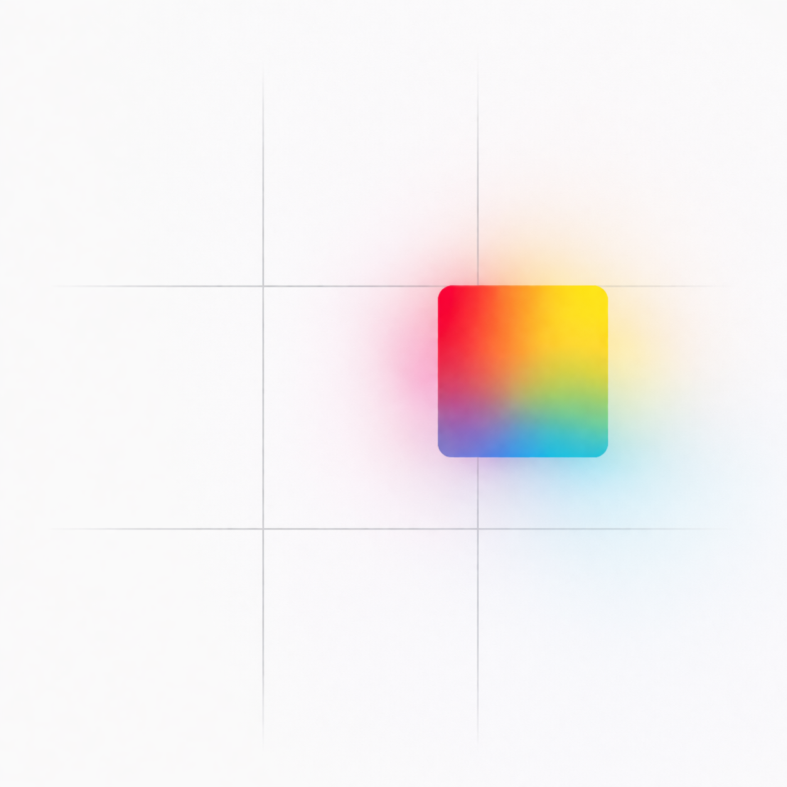
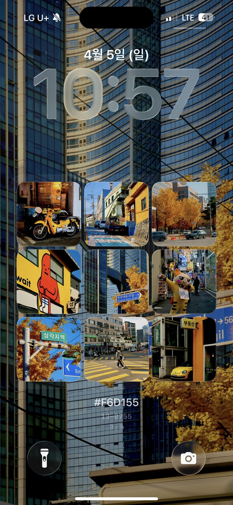
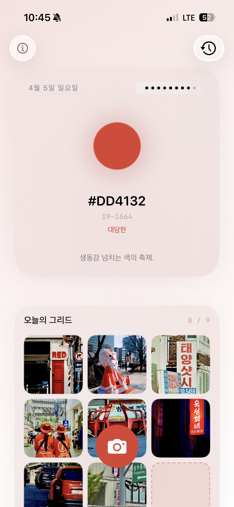
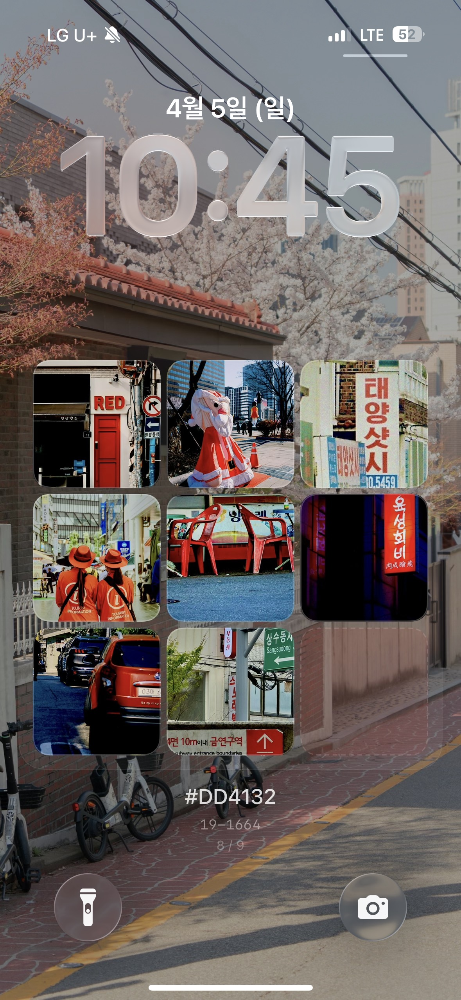
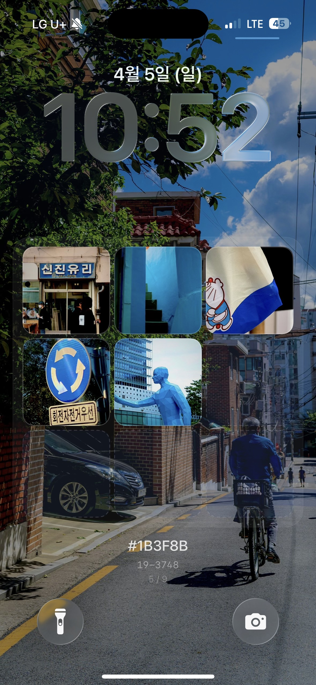
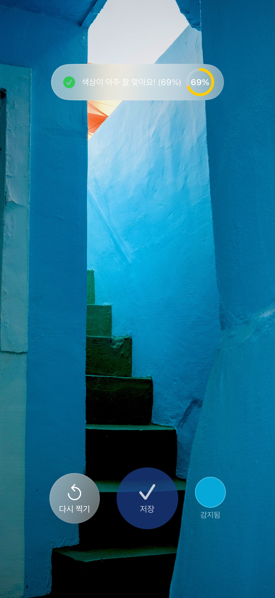
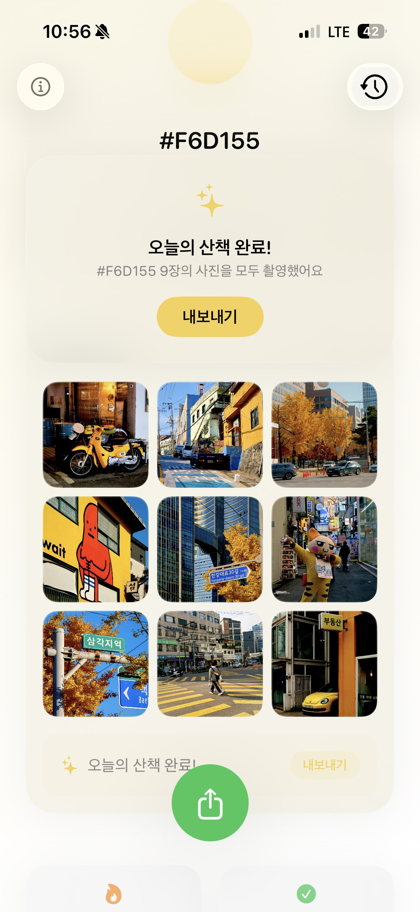
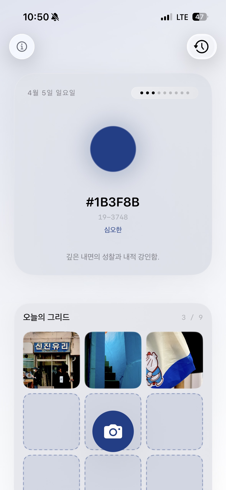
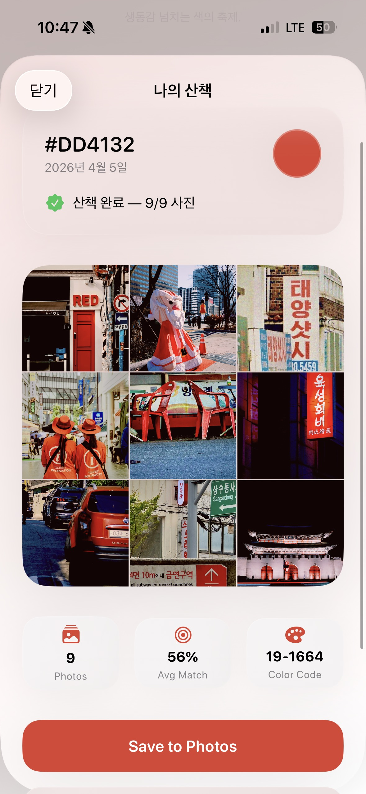
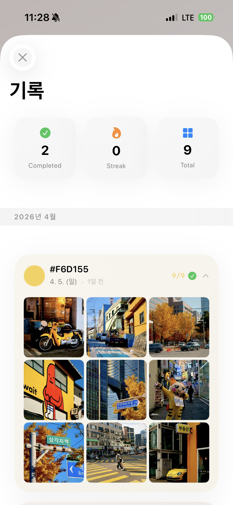

iOS App
매일 달라지는 컬러 하나. 거리에서, 카페에서, 하늘에서 그 색을 찾아 9장을 모으면 나만의 잠금화면이 완성돼요.
App Store색감채집 / Color Foraging / 色あつめ


Auto Wallpaper
9장을 모으면 3x3 그리드가 잠금화면 배경으로 바뀌어요. 폰을 켤 때마다 어제의 나와 다른 색을 만나요.







앱을 열면 오늘의 컬러가 나와요. 봄엔 따뜻한 색, 겨울엔 차분한 색. 30가지가 계절에 맞게 돌아요.
카메라를 대면 실시간으로 색을 잡아요. 회색 벽 앞의 빨간 우체통도 알아서 찾아내요.
지금 못 찍어도 괜찮아요. 이미 찍어둔 사진에서 색을 골라 넣을 수 있어요.
3x3 그리드에 사진을 하나씩 채워가요. 다 모으면 그날의 색이 하나의 작품이 돼요.
잠금화면, 홈 화면에서 오늘 몇 장 찍었는지 바로 보여요.
찍은 사진에 은은한 필름 톤이 자동으로 입혀져요. 따로 보정할 필요 없어요.
오늘의 컬러와 분위기가 나와요. "오늘은 이 색이구나."
그 색이 보이면 찍어요. 지금 못 찍으면 갤러리에서 골라도 돼요.
완성된 그리드를 공유하거나 잠금화면으로 바로 설정할 수 있어요.
색감채집, 지금 다운로드 해보세요.
App Store에서 다운로드